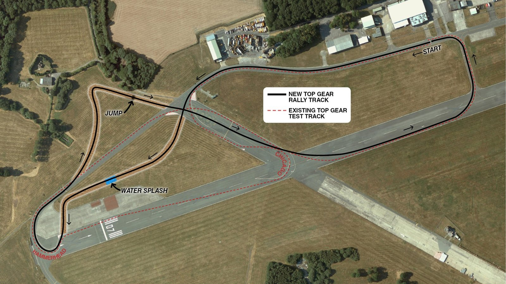
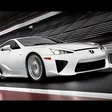
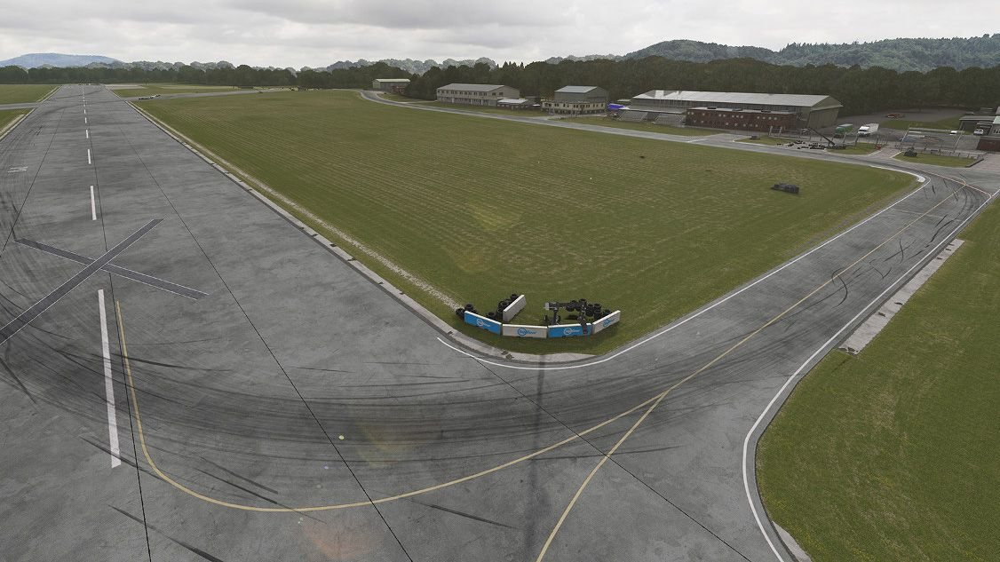
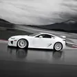
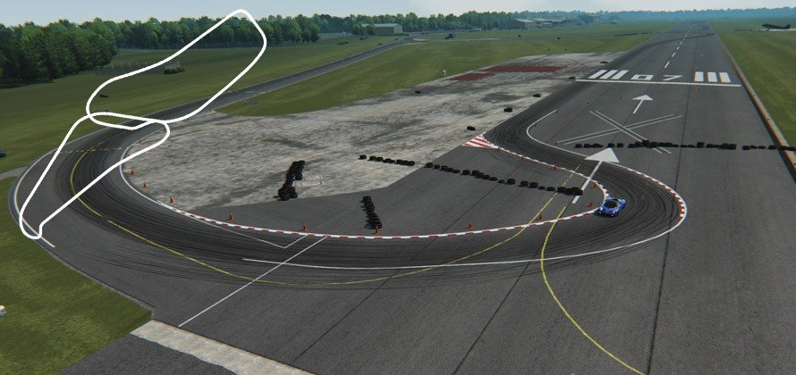

// Need for Speed: Most Wanted · Freelance Sound Recordist
Freelance sound recordist on Need for Speed: Most Wanted, Criterion's open-world racer. One day on the Top Gear test track recording the Lexus LFA, plus standard road cars for traffic passes and idles.
// Scope & Responsibilities
The cars were recorded from every angle. Boom arms and suction cups, secured with a serious amount of duct tape, put microphones around each vehicle so the sound could be captured from several positions at once.
For the high-speed passes we held our nerve as the car came by. At the moment of each pass, two matched pairs of microphones were moved across each other, which added movement and energy to the recordings.
The recordings were made with Sennheiser MKH 416 microphones into a Sound Devices recorder, capturing at 192 kHz / 24-bit. Rycote blimps and windjammers kept wind noise off the microphones.
Sound Design Examples
// Streamed here as compressed MP3 previews · exterior recordings only
// Lexus LFA — Exterior Passes & Manoeuvres


LEXUS LFA — Accel By Fast 03

LEXUS LFA — Accel By Aggressive Fast 03
I cut and cleaned hundreds of recordings from the day. The clips above are just some of my favourites.